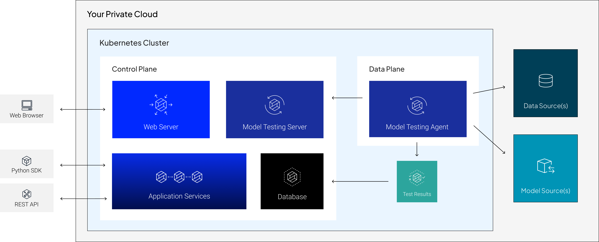

Architecture Overview
In this configuration, both planes are hosted in your organization’s private cloud.
The self-deployed configuration provides complete control over the RIME cluster’s behavior, including routing rule configuration, storage management, and compute resource optimization for model testin jobs.
Cloud Services
AWS services used by RIME include:
IAM
manages roles for internal services, which enable:
reading and writing data from S3
building images and pushing them to ECR
autoscaling cluster nodes by changing autoscaling group targets
configuring DNS records in route53 for external access
EKS/EC2/ELB
creates the Kubernetes cluster, the constituent nodes of that cluster, and load balancers for external access
Route 53/ACM
manages records for external access to the API layer, validated by SSL certificates
VPC
isolates the EKS cluster
Secrets Manager
used during installation
S3
stores and serves data and models
Other cloud services used by the RI Platform include:
Velero
provides backup and disaster recovery
Hashicorp Vault
provides secrets management
OIDC Authentication (Optional)
integrates with your existing identity provider
SMTP Service (Optional)
sends email notifications related to model testing
DataDog (Optional)
provides cluster health monitoring
Terraform
Robust Intelligence provides Terraform template modules to reduce the work involved in deploying RIME. Robust Intelligence staff is available to assist filling out the template modules.
Robust Intelligence staff can assist your DevOps team to design appropriate integration strategies for deployments that do not use AWS.